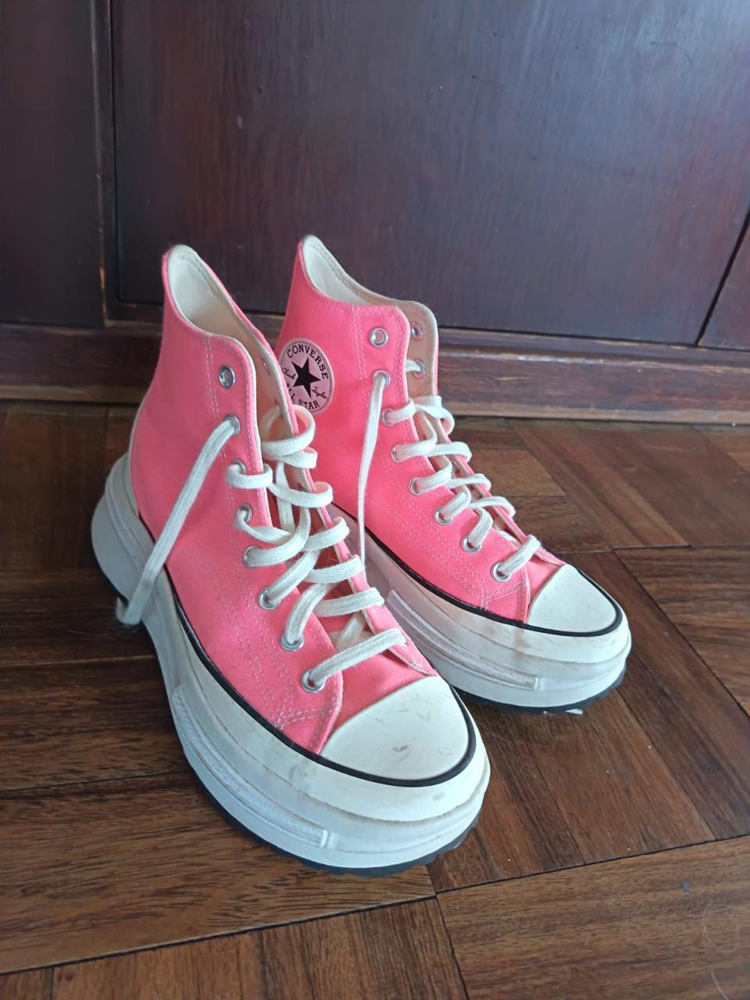
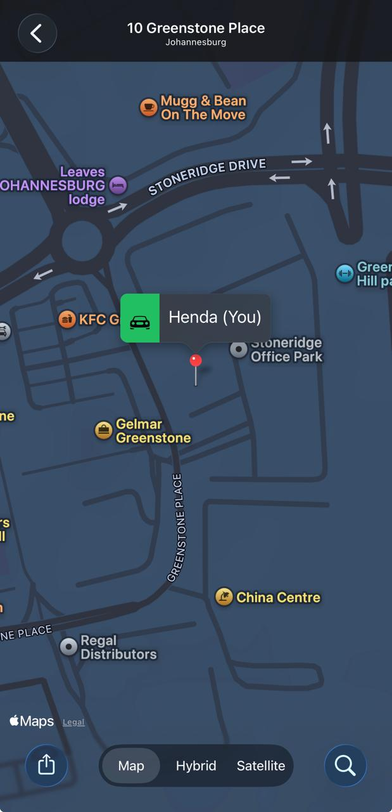

By this point, there was a small but rather significant problem.
You were becoming part of my everyday thinking.
Not just the big things. Not just the conversations that made us stop and think.
The little things, too.
The songs. The nonsense. The things that reminded us of each other for no particularly logical reason.
Apparently, a perfectly ordinary day was no longer safe from becoming a Döhne-and-Henda event.
And then there were the Converse.
On 20 July, you announced that your new skatulies had arrived.
White ones. And neon pink ones.
The pink ones had already earned you the rather magnificent title of Highlighter, courtesy of Marseille.
I, naturally, requested photographic evidence.

Somewhere along the way, music had also become a rather reliable way of finding each other.
Angus and Julia Stone had apparently been invited into the bath.
A threesome, I believe you called it.
You sent me the playlist.
I responded with the only reasonable assessment:
Lucky bastards.
You said the songs made you think of someone else.
I wasn't about to complain about the soundtrack.
Then came Blink-182.
On 23 July, I sent you a song and asked you to pause the world for a moment.
Just stop.
Think about us.
Your response arrived with Thursday vibes, and I recognised Blink immediately.
My favourite band ever.
There are certain things that make you smile because they are familiar.
And then there are the moments when someone unexpectedly meets you in a little corner of your world that you hadn't even thought to explain.
This was one of those.
By 26 July, we had reached a rather different kind of conversation.
You sent me a clip from Meet Joe Black.
And somehow, the conversation that followed was about something much bigger than a film.
I told you that I chose you.
That I chose this.
That I chose our wonderfully mixed-up life deliberately, every moment of every day.
Not because everything was predictable.
Not because we had some perfectly drawn-up plan.
But because it was you.
And because this was something I wanted.
You answered:
"Ditto en ditto en ditto. 'n Duisend keer ditto!"
I suspect that was the point at which the matter was officially settled.
Although, knowing us, there was probably still room for a committee meeting.
Two days later, on 28 July, came the pin.
Not just a location.
An instruction.

Ek stuur 'n pin dat jy weet waarheen om te hardloop. Eks hier, my arms oop in afwagting!!
There is something rather lovely about being given directions by someone who is already waiting for you.
And something even lovelier about knowing exactly where you want to go.
Looking back, none of these moments needed to be grand.
A pair of pink Converse.
A playlist.
A favourite band.
A film clip.
A pin on a map.
Small things, perhaps.
Except they weren't really small.
They were little pieces of a life taking shape.
And somewhere between the music, the laughter, the thousand-times-ditto and the promise of open arms, something became wonderfully clear.
Choosing someone isn't only a moment.
It's the little decisions that keep happening afterwards.
The songs you send.
The places you point each other towards.
The ordinary things that become yours.
The person you think of when something makes you laugh.
The person you want beside you when the world is paused.
And the person you choose, again and again, without needing to be asked.
We weren't at the end of a story.
We were still discovering what it could become.
And that, perhaps, was the most exciting part.
Ditto en ditto en ditto.
'n Duisend keer ditto.
YOU.